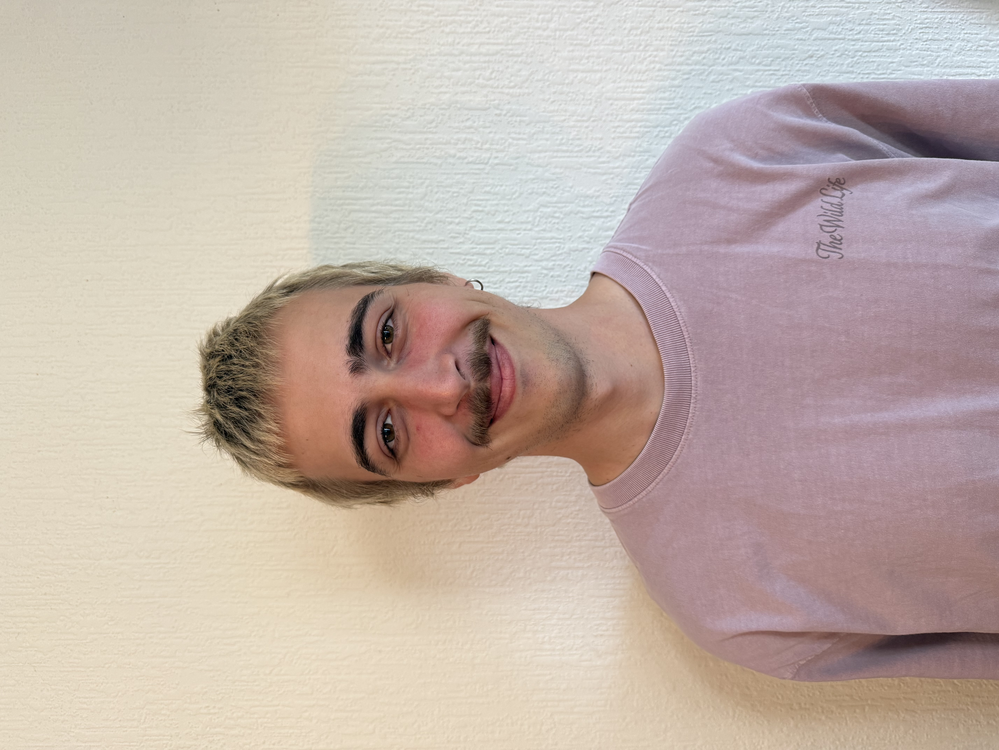

Jurre Thielemans, student systeem- en netwerkbeheer

Mijn naam is Jurre Thielemans, ik ben 22 jaar en woon in Hoevenen. Momenteel studeer ik Systeem- en Netwerkbeheer aan AP Hogeschool. Met deze opleiding wil ik mijn kennis over computers, servers en netwerken verder uitbreiden en mij voorbereiden op een job in de IT-sector.
Voor ik aan deze opleiding begon, heb ik in het middelbaar Design en Expo gestudeerd. Op het eerste gezicht is dat natuurlijk een heel andere richting dan Systeem- en Netwerkbeheer, maar ik heb er wel veel uit meegenomen. Zo heb ik geleerd om creatief te denken, oog te hebben voor details en projecten op een aantrekkelijke manier uit te werken. Die vaardigheden kan ik ook gebruiken in mijn huidige opleiding, bijvoorbeeld bij het maken van websites of het presenteren van projecten. Ik vind het dan ook interessant om mijn creatieve achtergrond te combineren met mijn interesse in technologie.
Tijdens de opleiding Systeem- en Netwerkbeheer leer ik hoe computersystemen, servers en netwerken werken en hoe je ze moet beheren. Vooral het technische gedeelte spreekt mij aan. Ik vind het interessant om te begrijpen wat er achter de schermen gebeurt en hoe verschillende systemen met elkaar communiceren. Daarnaast vind ik het oplossen van problemen leuk. Als iets niet werkt zoals het hoort, probeer ik eerst uit te zoeken waar het probleem precies zit en daarna een oplossing te vinden. Op die manier leer ik vaak ook weer iets nieuws.
Met mijn creatieve achtergrond en mijn huidige technische opleiding wil ik mezelf verder blijven ontwikkelen en ontdekken welke mogelijkheden de IT-sector mij kan bieden. Ik ben gemotiveerd om nieuwe dingen te leren en mijn vaardigheden stap voor stap te verbeteren. Met dit portfolio wil ik vooral laten zien wie ik ben, wat ik tijdens mijn opleiding leer en aan welke projecten ik werk. Zo wil ik mijn vooruitgang tonen en laten zien hoe ik mijn eigen weg probeer te vinden binnen de IT-wereld.